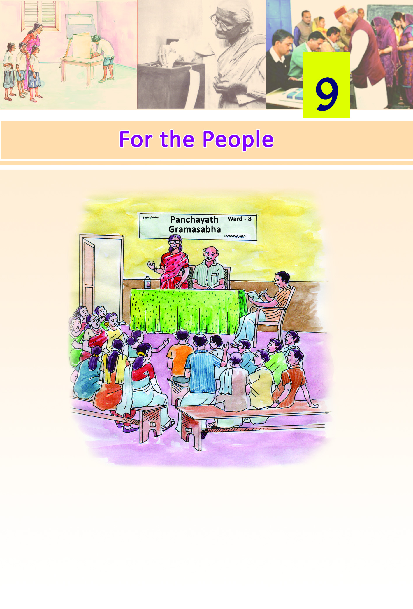
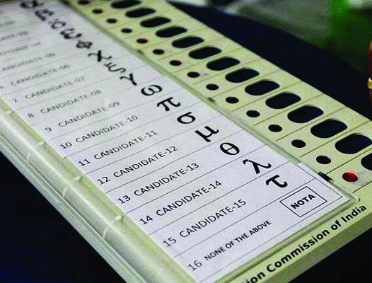
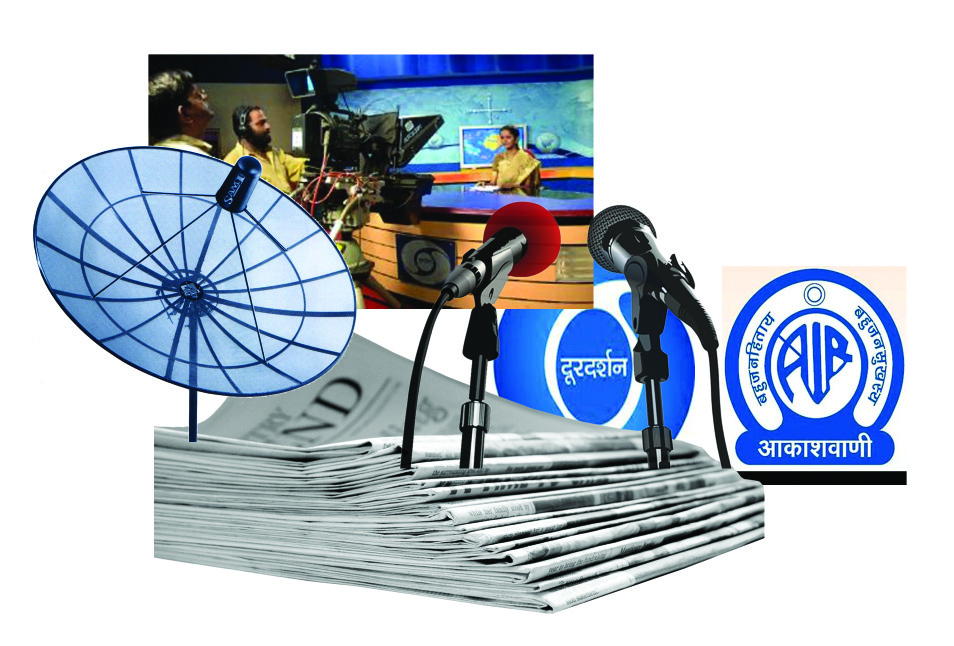
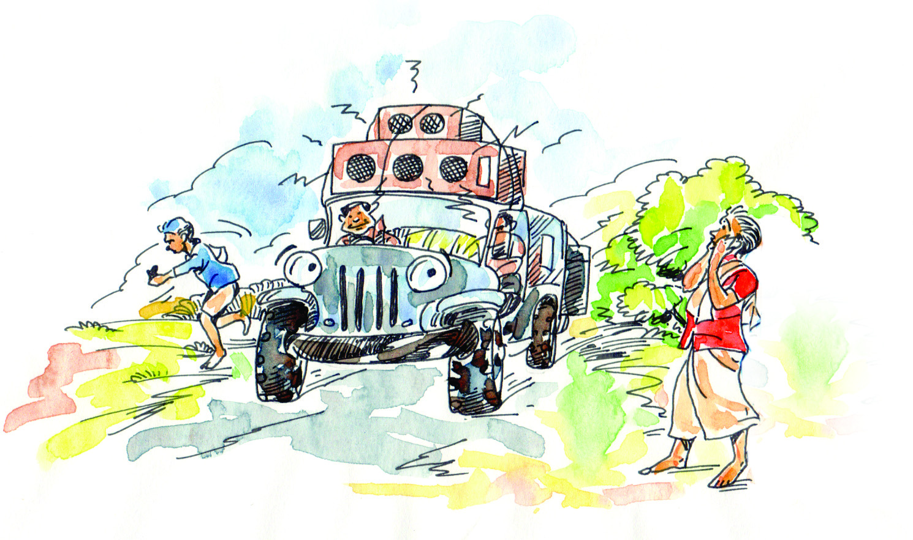

108
108
108
Social Science V
Have you heard of Gramasabha?
The picture shows a Gramasabha in session. Are such
Gramasabhas convened in your locality? Try to find out the
participants and topics discussed in those meetings.
Page 28

Page 29

109
109
109
For the People
Gramasabha is a forum to decide the developmental activities
at ward level in each panchayat. In municipalities and
corporations they are known as ‘Ward Sabhas’. Every voter in
a ward can participate in the Gramasabha/Ward Sabha. They
have the opportunities to express their opinions in the
discussions. People take collective decisions on the
developmental activities to be carried out in their wards. Such
activities are led by the people’s representative elected from
the ward. These representatives are known as ward members
in panchayats and councillors in municipalities and
corporations.
Where else can you see such election of representatives?
•
Class / school
•
Co-operative society
•
Club / library
•
Block Panchayat
•
District Panchayat
•
State Legislative Assembly
•
Parliament
•
People can directly participate and take decisions in
Gramasabha. However, at the state and national levels the
representatives elected by the people take decisions
collectively.
Democracy is an impossible thing
until the power is shared by all.
- Mahatma Gandhi
Democracy is the government of the
people, by the people, and for the people.
- Abraham Lincoln
Page 30

110
110
110
Social Science V
Democracy and election
The people elect their representatives to govern at various
levels, from the local level to the Parliament. Elections are
held on the basis of universal adult franchise. Any citizen
attain the age of 18 years has the right to vote in elections. The
representatives to Local Self Governments, State Legislative
Assemblies and Lok Sabha are elected through voting. Election
is a basic feature of democracy.
You have seen the views of
some great men reflecting
certain
features
of
democracy. Let’s see what
democracy is. Democracy is
the system in which the
people are governed either
directly by themselves or by
their elected representatives.
Democracy is the only system of
government that captures global respect.
- Amartya Sen
Direct and Indirect Democracy
In direct democracy people directly take important decisions. In
the State Legislative Assemblies and in the Parliament the decisions
are not taken directly by the people. Here, the representatives
elected by the people take decisions on their behalf. Such
representative democracy is called indirect democracy.
Democracy
The English word democracy is
derived from the Greek term
‘demokratia’. It is a blend of two
words, ‘demos’, means people
and ‘kratos’, means power.
Page 31

111
111
111
For the People
Try to find out answers to the following questions related to
elections.
Who among your family members can vote?
Which is your state legislative constituency?
Who is the Member of the Legislative Assembly (MLA) from
your constituency?
Which is your Lok Sabha
constituency?
Who is the Member of Parliament
(MP) from your constituency?
Stages of election
Isn't a leader elected from your
class to the School Parliament?
The election process of our country passes through certain
stages.
Observe the following flowchart showing these stages:
Stages of Election
Issue of election notification
Submission of nomination
Scrutiny of nomination
Withdrawal of nomination
Counting of votes and declaration of result
Voting
Page 32
112
112
112
Social Science V
All elections strictly follow these stages. Election is an inevitable
part of democracy.
Democracy depends on some other factors too.
Let us see what they are.
Factors sustaining democracy
•
The Rule of Law
All are equal before the law. Everyone is obliged to obey the
law. Nobody is above the law. The significance of the rule of
law can be understood from a simple example.
What will happen if somebody drive carelessly? Discuss its
consequences.
The aim of traffic rule is to ensure smooth and safe traffic for
vehicles.
Identify similar rules and evaluate their role in making our
lives comfortable.
•
Rights
Rights are granted to the citizens for the progress of individual
and the country. Different laws implemented by the
government to ensure various rights of the people are given
in column ‘A’ of the following table. Identify the rights ensured
by each law and try to fill in column ‘B’.
A
B
Laws
Rights
• Right To Education Act (RTE)
• .................................
• Traffic laws
• .................................
• Right to Information Act
• .................................
• The Senior Citizens Act
(Maintenance, Protection
and Welfare)
• .................................
Page 33


113
113
113
For the People
You have seen that the citizens of a democratic country enjoy
various rights by various laws like those mentioned in the
table.
Conduct a discussion in the class on the impact of the absence
of these rights and how it will adversely affect democracy.
•
Social and economic justice
Democracy is the form of government that ensures the
participation of all people. It is meaningful only when all are
equal. Ensuring equal treatment for all by minimising social
and economic inequalities is the principle behind the idea of
social and economic justice.
The following are a few social conditions that violate
social and economic justice. How do they affect
democracy? Analyse.
-
-Slavery
-
Gender discrimination
-
Unemployment
-
Poverty
• Mass Media
Page 34
114
114
114
Social Science V
Observe the picture and try to identify what all come under
mass media.
List out the different television channels and newspapers.
The mass media is a major means that helps in informing the
public about events happening in the society. Free and impartial
media are the foundation of democracy. The media play an
important role to familiarize the public with individual
opinions and to bring common demands to the government’s
attention. The media also informs the public of the decisions
of the government. Identify such news from the newspapers
and present them in class.
What will be the condition of democracy in the absence of
media? Prepare a note.
• Opposition
We have seen the significance of election in democracy. Election
creates both ruling and opposition parties. It is the duty of the
Opposition to persuade the government to function better by
pointing out the wrongs of the government.
Collect news on the functioning of the Opposition. Conduct a
discussion on the role of the Opposition in democracy.
Election, rule of law, rights, social and economic justice, mass
media and Opposition are the factors that sustain democracy.
Democracy- a way of life
As a way of life democracy upholds human values and
individual liberty. Respecting opinions of others is a part of
democratic way of life. An individual has the right to agree or
disagree with the opinion of others. Democracy becomes
meaningful when we are able to form collective decisions. We
should be able to adopt the democratic way of life at home, in
school and in society.
Page 35
115
115
115
For the People
We imbibe several democratic habits from our day-to-day life.
What are they?
•
We accept the opinions of others.
•
We wait for our turn.
•
We value the freedom of others.
Is your friend democratic? Observe the table. Put a
tick mark in () the suitable box.
Context
Yes
No
Obey traffic rules
Boards the school bus in a queue
Returns the library book in time.
Disagrees to certain opinions that he/she
considers wrong.
Wears the school uniform without fail.
Does not litter public places.
Try to add more statements to the list.
The tick mark () in the 'yes'-box implies that the individual is
a democrat. An increase in the number of tick marks in the
'yes' column signifies that the person is more in tune with the
democratic way of life.
Every individual should respect the democratic activities of
others for the progress of the society. No one has the right to
obstruct the democratic activities of another. Democracy is
based on the legal system. It is undemocratic to break the law.
Page 36

116
116
116
Social Science V
Observe the picture indicating sound pollution.
Have you noticed similar undemocratic activities? Discuss how
they obstruct democracy. Democracy is the world’s best form
of government. It enables each citizen to be a part of the
government. We have to stay alert to empower democracy.
Summary
•
Democracy is a government of the people, by the people
and for the people.
•
Democracy is not only a form of government but also a
way of life.
•
Elections, the rule of law, rights, social and economic justice,
mass media and the Opposition are the factors that sustain
democracy.
Page 37
117
117
117
For the People
Significant learning outcomes
The learner can:
•
state the ideas relating to democracy by comparing its
various definitions.
•
explain the stages of election process.
•
identify the basic factors that sustain democracy.
•
recognize that democracy is a system of government as
well as a way of life and that it is essential for the common
good of the society.
Let us assess
•
List three features of democracy.
•
Certain conditions favourable for the smooth functioning
of democracy are given below.
A ˛
Election
B ˛ Courts
C
˛
Rights
D ˛ Social and economic justice
E
˛
Mass media
F ˛ Opposition
Mark the appropriate letter (signifying the aforementioned
factors) against the statements given below.
1. Constructed a bridge across the river
2. Any individual can assume an office, if he/she
has the required qualification
3. The court sentenced the convict for life
imprisonment.
4. All TV channels highlighted the news
of the corrupt public figure.
5. People elect their representatives once
in five years.
•
Prepare a note on a situation where democratic principles
are applied
Page 38

118
118
118
Social Science V
Extended activities
•
Prepare a report on the election of your class leader. (You
may include details like the submission of nomination, the
mode of election, number of votes secured by each
candidate, etc.)
•
Collect news on election and rule of law.
•
Prepare a wall magazine featuring the views of great men
on democracy.
•
Prepare a questionnaire to conduct an interview with your
ward member/councillor (concerning developmental
activities).
•
Prepare a short note on the importance of election in
democracy.
•
Prepare a collage incorporating the news and pictures
related to election.